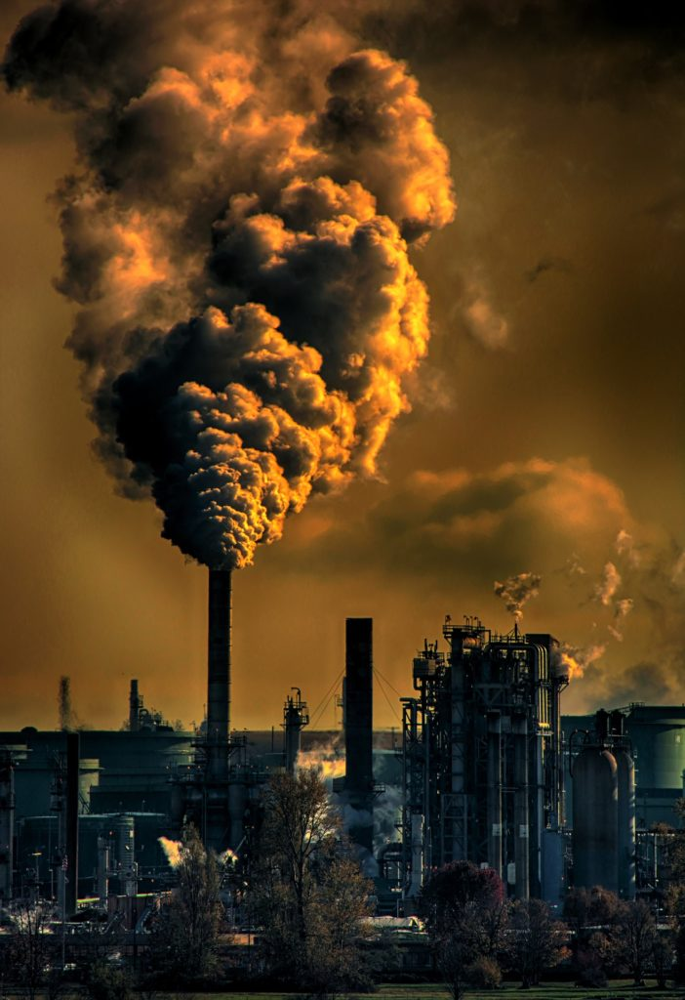

Smog makes breathing difficult, especially for children and older adults. Some cities that suffer from extreme smog issue air pollution warnings. The government of Hong Kong, for example, will warn people not to go outside or engage in strenuous physical activity (such as running or swimming) when smog is very thick.
When air pollutants such as nitrogen oxide and sulfur dioxide mix with moisture, they change into acids. They then fall back to earth as acid rain. Wind often carries acid rain far from the pollution source. Pollutants produced by factories and power plants in Spain can fall as acid rain in Norway.
Acid rain can kill all the trees in a forest. It can also devastate lakes, streams, and other waterways. When lakes become acidic, fish can't survive. In Sweden, acid rain created thousands of “dead lakes,” where fish no longer live.
Acid rain also wears away marble and other kinds of stone. It has erased the words on gravestones and damaged many historic buildings and monuments. The Taj Mahal, in Agra, India, was once gleaming white. Years of exposure to acid rain has left it pale.
Governments have tried to prevent acid rain by limiting the amount of pollutants released into the air. In Europe and North America, they have had some success, but acid rain remains a major problem in the developing world, especially Asia.
Greenhouse gases are another source of air pollution. Greenhouse gases such as carbon dioxide and methane occur naturally in the atmosphere. In fact, they are necessary for life on Earth. They absorb sunlight reflected from Earth, preventing it from escaping into space. By trapping heat in the atmosphere, they keep Earth warm enough for people to live. This is called the greenhouse effect.

But human activities such as burning fossil fuels and destroying forests have increased the amount of greenhouse gases in the atmosphere. This has increased the greenhouse effect, and average temperatures across the globe are rising. The decade that began in the year 2000 was the warmest on record. This increase in worldwide average temperatures, caused in part by human activity, is called global warming.
Global warming is causing ice sheets and glaciers to melt. The melting ice is causing sea levels to rise at a rate of 2 millimeters (0.09 inches) per year. The rising seas will eventually flood low-lying coastal regions. Entire nations, such as the islands of Maldives, are threatened by this climate change.
Global warming also contributes to the phenomenon of ocean acidification. Ocean acidification is the process of ocean waters absorbing more carbon dioxide from the atmosphere. Fewer organisms can survive in warmer, less salty waters. The ocean food web is threatened as plants and animals such as coral fail to adapt to more acidic oceans.
Scientists have predicted that global warming will cause an increase in severe storms. It will also cause more droughts in some regions and more flooding in others.
The change in average temperatures is already shrinking some habitats, the regions where plants and animals naturally live. Polar bears hunt seals from sea ice in the Arctic. The melting ice is forcing polar bears to travel farther to find food, and their numbers are shrinking.
People and governments can respond quickly and effectively to reduce air pollution. Chemicals called chlorofluorocarbons (CFCs) are a dangerous form of air pollution that governments worked to reduce in the 1980s and 1990s. CFCs are found in gases that cool refrigerators, in foam products, and in aerosol cans.
CFCs damage the ozone layer, a region in Earth's upper atmosphere. The ozone layer protects Earth by absorbing much of the sun's harmful ultraviolet radiation. When people are exposed to more ultraviolet radiation, they are more likely to develop skin cancer, eye diseases, and other illnesses.
In the 1980s, scientists noticed that the ozone layer over Antarctica was thinning. This is often called the “ozone hole.” No one lives permanently in Antarctica. But Australia, the home of more than 22 million people, lies at the edge of the hole. In the 1990s, the Australian government began an effort to warn people of the dangers of too much sun. Many countries, including the United States, now severely limit the production of CFCs.